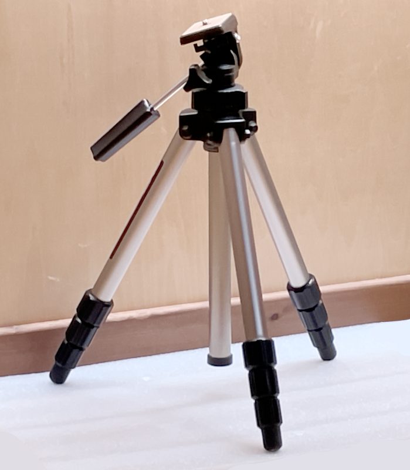
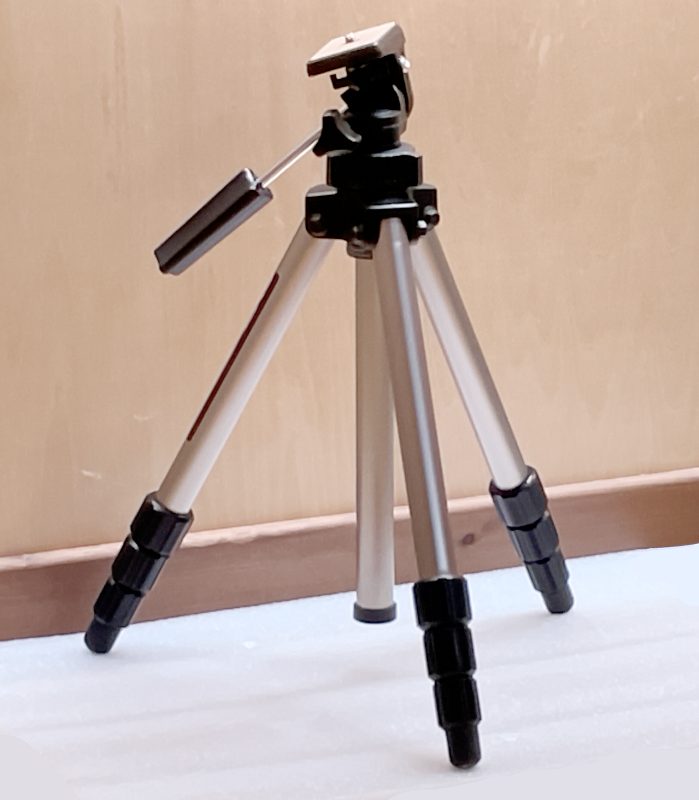

撮影した天体写真です
ネット上にあるものと比べると見劣りするものばかりですが、天体写真を撮ろうと考えている人の参考になれば幸いです画像サイズが大きいので更新されてもキャッシュが残っていて変化がない可能性があります 更新を確認するときはキャッシュを削除するとよいです
機材
 Z50は入門機として人気なミラーレスカメラです。
価格はボディとダブルズームキットで約15万円です
センサーサイズはAPS-Cで、Hα線もカットするため、淡い天体を撮影するのには少し苦労します。

Z50は入門機として人気なミラーレスカメラです。
価格はボディとダブルズームキットで約15万円です
センサーサイズはAPS-Cで、Hα線もカットするため、淡い天体を撮影するのには少し苦労します。
赤道儀がないので、ビデオカメラ用の三脚で撮影しています。 SDカードは32GBです リレーズ、ソフトフィルター、光害カットフィルターなどは使用していません
撮影場所
自宅から5km圏内で撮影しています SQM値は 21.15 (mag/arc sec^2)ほどです 天気のいい日には肉眼で天の川の構造や、M8の存在が確認できます。撮影方法
インターネットで天体の位置を覚えてから外に出て、覚えた方向にカメラを向け広角で撮影します（露出は20秒ほど) 天体を発見したらタイマー撮影を２秒に設定して最大望遠（35mm換算380mm）で試し撮りします（露出は4秒ほど） カメラの重さによる三脚のひずみを考えてセットします。画像全体の1/4ぐらい星の動く方向の逆方向にずらしておきます 最大望遠にしてマニュアルフォーカスでピントを合わせます（星が一番小さく、暗い星が一番多く見えるところ） タイマー撮影をオフにしてインターバルタイマー撮影で撮影します。 １枚の露出は１秒～３秒（北極星に近いほど長い）、撮影間隔は１枚の露出+１秒、撮影枚数は１秒露出で100枚（合計200秒）です。 SDカードをPCに刺して、sequatorで撮影した画像をスタッキングします。 sequatorは計算方法を""、広角ならレンズのゆがみ補正をオンにします。フラット画像はとり方がよくわからないのでなしです。 tifファイルで出力してGIMPで開きます。目標の天体に白飛びがないように"露出"で明るさを補正します。 色を50にして新しいレイヤーを作り、モードをソフトライトにして放射グラデーションで背景の明るさが均一になるようにします（フラット補正） トーンカーブで色と明度を調整して、背景は黒つぶれしない程度に、ノイズが浮き出る限界ぐらいまで淡い部分を目立たせます。 トリミングしてpng非圧縮で出力します。撮影した写真
撮影時期順冬の天の川

25秒露出,15枚、自宅撮影
夏の天の川に対して目立った構造もなく淡いです。GIMPによるフラット補正で天の川が認識しやすくなりましたオリオン大星雲とランニングマン星雲
M42,M43,NGC1977

１秒露出,280枚、公園で撮影
肉眼でも見えるとても明るい星雲です。光害の少ない場所で撮影しました。淡い部分まで目立たせることができました燃える木星雲と馬頭星雲
NGC2024,IC434

１.５秒露出,300枚、公園で撮影
露出時間を多くとることで、ほとんどがHα線である馬頭星雲を目立たせることができました 中央に見える明るい星がオリオン座の３つ星の左のアルニタクですばら星雲
NGC2244

１秒露出,300枚、公園で撮影
ほとんどがHα線の冬の大三角にある星雲です。 光害の少ない場所で撮影することでなんとか赤い部分を炙り出すことができましたプレアデス星団
M45

１秒露出,180枚、公園で撮影
撮影枚数も少なく、あまり出来のいい写真ではありませんが載せておきます。 今年のうちにリベンジしたいです。アンドロメダ銀河とその伴銀河
M31,M32,M110

１秒露出,350枚、自宅撮影
南中のあたりで撮影したため、自宅でも淡いところを炙りだすことができました。 トーンカーブの重要性を知ることができた写真です。